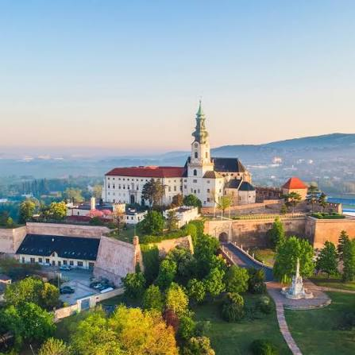

Kaviaren Luno vznikla v roku 202 ako male miesto pre ludi, ktory maju radi dobru kavu a prijemnu atmosferu.
Kavu pripravujeme z cerstvo prazenych zrn a snazime sa podporovat lokalnych dodavatelov.
Najdete nas v centre Nitry
informacie o meste najdete tu na Stranke mesta Nitry

Fiktivna kaviaren na skolskz projekt